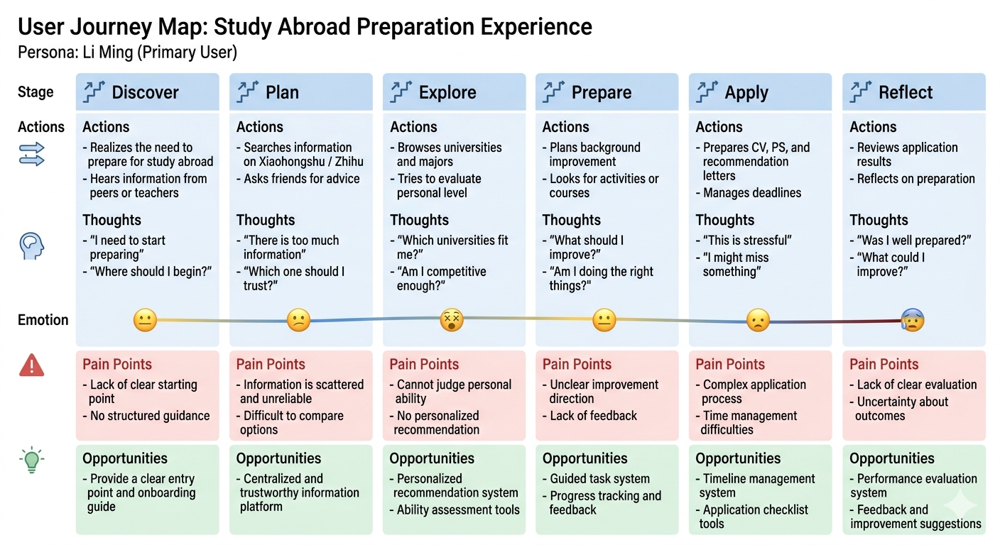

A. Motivation & Research
Journey RPG
A gamified study-abroad planning system for XJTLU students preparing for overseas postgraduate applications.
This portfolio reframes the project as an evidence-based UX case study, showing how we translated a fragmented, high-pressure planning journey into a clearer experience built around progress, guidance, and motivation.
The Why
Problem / Context
For many XJTLU students, study-abroad preparation is not a single task. It is a sequence of research, comparison, document preparation, and deadline management activities that can feel difficult to structure.
The project focuses on a student experience shaped by information overload, unclear priorities, long planning horizons, and emotional uncertainty.
Our design opportunity was to transform this complex process into a guided pathway that still respects academic seriousness while making progress more visible and manageable.
Scattered information sources
Students switch between university websites, social media, notes, and peer advice with no unified planning structure.
Invisible progress
Long-term goals such as applications or language tests provide little short-term feedback, which reduces momentum.
High-stakes comparison work
Comparing destinations, courses, deadlines, and requirements creates cognitive load and decision fatigue.
Uneven support and confidence
Students may receive advice from many channels, but not always at the right time or in the right format for action.
Literature Review
Literature Review & Research-Informed Requirements
Key insight 1 💡
Paper 1Rewards are more motivating when they have transferable and consumable value, rather than existing only as isolated digital points. This comes from the paper’s “Reward Transfer” mechanism, where rewards earned in an educational game could be used in a recreational game, which significantly improved motivation and reward perception.
Key insight 2 💡
Paper 2Several studies show that rewards should not rely only on extrinsic motivation such as badges, leaderboards, and progress bars. Although these elements can improve participation, long-term engagement remains limited if the design does not also support intrinsic motivation.
Key requirement 1 🎯
From Key insight 1 💡The system must support cross-context reward usage inside the same web app, so that rewards earned in one activity can be redeemed in multiple scenarios, such as personalised avatars, study-abroad material templates, or alumni consultation opportunities.
Key requirement 2 🎯
From Key insight 2 💡The system must combine extrinsic rewards with intrinsic motivators, such as a sense of challenge, personalised progress feedback, and social recognition, instead of relying only on ranking-based participation.
Key insight 3 💡
Paper 3A one-size-fits-all approach is not effective. This paper shows that multi-dimensional player profiles are more accurate than single labels, and that personalised gamification can improve motivation, participation, and learning outcomes.
Key insight 4 💡
Paper 3The same paper also suggests that dynamic adaptation has potential value. Task order or difficulty should not remain fixed if the system already knows how the user is performing.
Key requirement 3 🎯
From Key insight 3 💡The system must build a lightweight multi-dimensional user profile, including academic stage, postgraduate goal, and information preference, so that different users can receive different content, such as Year 2 university exploration and Year 3 application material guidance.
Key requirement 4 🎯
From Key insight 4 💡The system must support lightweight dynamic adjustment rules, using user behaviour such as quiz accuracy or participation frequency to adjust the difficulty or sequence of later tasks.
Key insight 5 💡
Paper 4Traditional linear question-and-answer interaction is too abstract and passive. This paper shows that non-linear, spatial, and interactive exploration can improve participation, information gain, and clarity.
Key insight 6 💡
Paper 4The same paper also shows that AI narrative feedback can strengthen users’ understanding of their decisions and encourage reflection.
Key requirement 5 🎯
From Key insight 5 💡The system must support non-linear exploratory interaction, such as study-abroad pathway simulation, random event triggers, and branching decision-based activities, so that users learn through choice → feedback → adjustment.
Key requirement 6 🎯
From Key insight 6 💡The system must provide AI-assisted narrative feedback to explain the meaning and possible impact of the user’s actions, for example explaining how completing an IELTS task may improve competitiveness for UK applications.
Key insight 7 💡
Supporting papersResearch shows that system evaluation should not rely only on whether users participated. Instead, multi-dimensional behavioural data provides a stronger basis for evaluating engagement and improving design.
Key insight 8 💡
Supporting papersVisual feedback, especially progress bars and visible progress indicators, can encourage persistence and improve sustained participation.
Key requirement 7 🎯
From Key insight 7 💡The system must track task completion rate, reward earning and spending, content viewing time, and interaction frequency, rather than only whether the user joined an activity.
Key requirement 8 🎯
From Key insight 8 💡The system must provide visualised learning progress feedback for both students and teachers, such as personal study-abroad preparation progress bars and class-level participation summaries.
Key insight 9 💡
Supporting papersEffective gamification does not always require a highly complex system. Low-cost and modular elements can still produce measurable benefits. At the same time, highly complex multi-system designs may be unrealistic for a small web-based coursework project.
Key insight 10 💡
Supporting papersSeveral papers also indicate that too much complexity can reduce usability. Personalisation and interaction should remain understandable, especially for users with different levels of experience.
Key requirement 9 🎯
From Key insight 9 💡The system must prioritise modular, low-cost gamification elements such as badges, leaderboards, and progress bars that can be integrated directly into the web app.
Key requirement 10 🎯
From Key insight 10 💡The system must maintain low cognitive load, keeping complex personalisation logic in the background while offering prompts and guidance to support both students and teachers.
Final synthesis ✨
Across these papers, the common problem is not simply lack of information, but lack of meaningful rewards, personalised pathways, interactive exploration, measurable progress, and lightweight implementability. Based on this literature survey, our design requirements focus on making the system more motivating, more adaptive, more interactive, and more feasible for a web-based coursework project.
Product / Competitor Analysis
Commercial products and market gap
Category A
University and programme websites
- Strong on official requirements and factual accuracy.
- Weak on cross-option comparison and long-term motivation.
- Often structured around institutions, not student journeys.
Category B
Productivity tools and note systems
- Useful for task tracking and deadline capture.
- Require users to build their own structure from scratch.
- Lack domain-specific guidance for postgraduate planning.
Category C
Forums, consultants, and social advice channels
- Helpful for lived experience and reassurance.
- Information quality and relevance can vary widely.
- Advice is often fragmented and difficult to revisit later.
Product 04
Commercial product reference slot
Opportunity Gap
No single product combines structured planning, credible guidance, and motivating progress cues in one student-facing experience
This gap shaped the Journey RPG concept: a system that treats the process as a navigable journey rather than a passive collection of information.
Stakeholders / Personas
Primary and secondary users in the planning ecosystem
Primary User
🎯 Goals / frustrations / needs

Secondary User
🧭 Goals / frustrations / needs

B. User Requirements
User journey evidence and key requirements derived from literature
This module keeps the journey map and the final requirement set together, making the transition from research evidence to design direction visible.
User Journey Map
The journey map stays inside the requirements module

Key Requirements derived from literature
Exact requirement wording grouped by theme
Theme 1. Reward Mechanism 🎮
Key requirement 1 🎯
The system must support cross-context reward usage inside the same web app, so that rewards earned in one activity can be redeemed in multiple scenarios, such as personalised avatars, study-abroad material templates, or alumni consultation opportunities.
Key requirement 2 🎯
The system must combine extrinsic rewards with intrinsic motivators, such as a sense of challenge, personalised progress feedback, and social recognition, instead of relying only on ranking-based participation.
Theme 2. Personalisation 🧠
Key requirement 3 🎯
The system must build a lightweight multi-dimensional user profile, including academic stage, postgraduate goal, and information preference, so that different users can receive different content, such as Year 2 university exploration and Year 3 application material guidance.
Key requirement 4 🎯
The system must support lightweight dynamic adjustment rules, using user behaviour such as quiz accuracy or participation frequency to adjust the difficulty or sequence of later tasks.
Theme 3. Interaction Experience 🎯
Key requirement 5 🎯
The system must support non-linear exploratory interaction, such as study-abroad pathway simulation, random event triggers, and branching decision-based activities, so that users learn through choice → feedback → adjustment.
Key requirement 6 🎯
The system must provide AI-assisted narrative feedback to explain the meaning and possible impact of the user’s actions, for example explaining how completing an IELTS task may improve competitiveness for UK applications.
Theme 4. Data & Tracking 📊
Key requirement 7 🎯
The system must track task completion rate, reward earning and spending, content viewing time, and interaction frequency, rather than only whether the user joined an activity.
Key requirement 8 🎯
The system must provide visualised learning progress feedback for both students and teachers, such as personal study-abroad preparation progress bars and class-level participation summaries.
Theme 5. Feasibility & Lightweight Design ⚙️
Key requirement 9 🎯
The system must prioritise modular, low-cost gamification elements such as badges, leaderboards, and progress bars that can be integrated directly into the web app.
Key requirement 10 🎯
The system must maintain low cognitive load, keeping complex personalisation logic in the background while offering prompts and guidance to support both students and teachers.
Evidence of Life
Progress evidence gallery
Evidence of Life 01
Evidence of Life 02
Evidence of Life 03
C. Ideation & Alternatives
Concept generation, comparison, and early prototype framing
This module keeps ideation breadth, design alternatives, and the early prototype direction in one continuous visual sequence.
Crazy Eights
Early ideation used fast sketching around focused design questions
Design questions
How might progress feel visible?
How might planning feel less overwhelming?
How might guidance stay credible and motivating?
The sketching phase tested different mental models, including map-based progression, checklist dashboards, and advisor-linked milestone flows.
Crazy 8
Crazy 8 Sketch Set
1. Quest map
2. Dashboard cards
3. Calendar-first view
4. Advisor dashboard
5. Comparison matrix
6. Level progression
7. Preparation hub
8. Reward feedback
Design Alternatives
Three directions were compared before the final concept was selected
A
Linear checklist dashboard
A structured task manager focused on deadlines, documents, and completion states.
- Very clear and practical.
- Low emotional engagement.
- Feels similar to existing productivity tools.
B
Journey RPG map
A guided pathway that treats preparation as a series of meaningful stages, quests, and readiness milestones.
- Balances motivation with structure.
- Makes progress and direction visible.
- Supports both exploration and action.
C
Social planning hub
A community-led approach centred on peer stories, shared tips, and collaborative support.
- Useful for reassurance and experience sharing.
- Harder to maintain quality and consistency.
- Less suitable for clear task sequencing.
Why B was chosen
Option B offered the strongest balance of motivation, structure, and academic credibility
The Journey RPG direction retained the seriousness of application planning while introducing a clearer sense of progression than Option A and a more dependable structure than Option C.
Low-Fi Prototype
Early wireframes and link-ready placeholder area
Low-Fi
Low-fidelity wireframes
Low-fi wireframe space for screen flow, layout, and information priority
Low-Fi Link
Low-fi prototype / Figma link area
D. Technical Implementation
Architecture and prototype delivery for the final web-based coursework scope
This module keeps the technical presentation lightweight, clear, and appropriately scoped for a static coursework portfolio.
System Architecture
A simple front-end structure supports a clear and readable case-study presentation
The coursework site is intentionally lightweight. The emphasis is on semantic structure, responsive layout, and a strong visual hierarchy rather than complex interaction logic.
Content Layer
Case-study sections, evidence summaries, and future asset slots.
Presentation Layer
Responsive CSS system using reusable cards, grids, and section styles.
Asset Layer
Journey maps, persona boards, sketch boards, prototype exports, and contribution evidence.
index.htmlholds the complete single-page portfolio structure.style.cssdefines the visual system, component styling, and responsive layout.persona/,JourneyMap/, andassets/images/provide the current visual assets.
High-Fi
High-fidelity prototype
High-fi interface space for polished UI screens and interaction states
Live URL
Live prototype / deployed URL area
E. Evaluation & Reflection
Testing, refinement, reflection, and final team contribution record
The final module keeps testing evidence, iteration logic, reflective analysis, and the reduced team record together at the very end of the page.
Usability Testing
Evaluation focuses on what the concept communicates well and what still needs refinement
Method
Peer walkthroughs
Used to test whether the journey structure and page hierarchy feel understandable.
Method
Heuristic review
Used to assess clarity, consistency, and whether gamified elements remain appropriate.
Method
Content critique
Used to identify where task guidance and comparison information still need sharpening.
Findings
01
The journey metaphor improves engagement, but users still need direct access to deadlines and next actions.
02
Comparison support is essential because motivation alone does not reduce decision complexity.
03
Playful elements are most credible when paired with explicit requirements and advisor checkpoints.
Iterative Refinement
Strengthen progress visibility
Add clearer stage completion states and a stronger sense of readiness.
Clarify comparison workflows
Support shortlisting, criteria weighting, and requirement review more directly.
Refine reward intensity
Keep feedback motivating, but avoid visual elements that feel too game-like for academic planning.
Iterative Refinement
Before / After visual comparison area
Before
After
Final Reflection
The process highlighted both the promise and the limits of gamified planning
Learning
Designing for motivation requires structural clarity first
The most valuable design move was not adding playful visuals, but re-organising the journey into a form that users can understand and act on.
Limitations
The concept still needs richer real-world validation
Future iterations should include deeper user testing, higher-fidelity task flows, and stronger evidence around how students compare options over time.
Ethics and AI use
Playful systems must remain transparent, supportive, and accountable
Any AI-assisted content, planning suggestions, or design support should be checked against user evidence, course expectations, and the risk of oversimplifying high-stakes decisions.
Individual Contributions
Team record kept light and placed last
| Member | Student ID | Contribution Focus |
|---|---|---|
 Danyi Huang
Danyi Huang
|
2364444 | 🎯 Contribution focus: concept framing, motivation narrative, and communicating the value of a gamified planning journey. Structured the initial problem space and translated user pain points into a clear and engaging design vision, supporting early-stage direction setting. |
 Yuxin Zou
Yuxin Zou
|
2361355 | 🎯 Contribution focus: user context synthesis, interaction critique, and improving how complex information is communicated. Analysed user behaviour and refined interaction clarity, ensuring information is structured, accessible, and aligned with user understanding. |
 Yihan Fu
Yihan Fu
|
2362845 | 🎯 Contribution focus: journey planning logic, interface structuring, and step-by-step flow refinement. Developed the progression structure and supported the user journey design, ensuring a coherent and intuitive experience across different stages. |
 Xinlan Wu
Xinlan Wu
|
2361130 | 🎯 Contribution focus: portfolio restructuring, system design integration, and journey interaction logic. Translated literature insights into structured requirements and supported the alignment of user needs, HCI principles, and the final case-study presentation. |